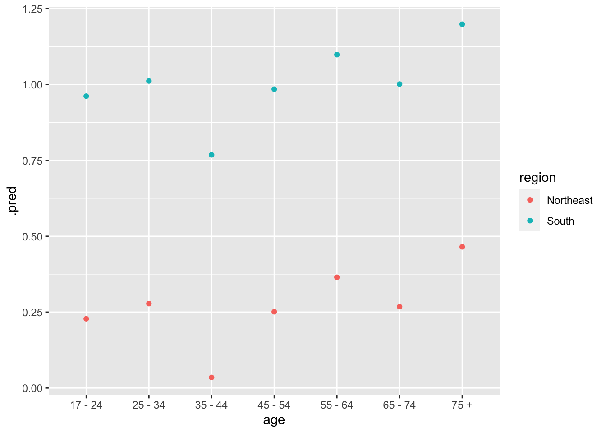

Chapter 11 Continuous Response
In the last two chapters, we covered regressions and common pitfalls. This chapter will be all about applying these concepts using the tidymodels framework.
The dataset we will be using is nes from the PPBDS.data package. nes contains data from the American National Election Survey, conducted every presidential election cycle. Along with demographic details, such as race, gender, and age, the survey also contains respondents’ ideological identification. Because ideology is measured on a scale from 1 to 7, we can treat it as our continuous outcome variable.
Wouldn’t it be interesting to predict ideology based off of other variables? This question has wide-reaching consequences for political polling and election outcomes. Throughout this chapter, we seek to answer this question: Which factors influences one’s ideology, and how so?
11.1 Exploratory Data Analysis
Load the libraries needed for this chapter. You might notice that tidymodels and rsample are new. The tidymodels framework makes it easy to use functions from various different packages in constructing, fitting, and testing models. Similarly, the rsample package allows for machine learning by splitting the data into training and testing sets.
library(PPBDS.data)
library(skimr)
library(tidyverse)
library(tidymodels)
library(rsample)
library(broom.mixed)
library(rstanarm)
library(gt)Now that we have loaded PPBDS.data, let’s glimpse() the dataset.
## Rows: 38,558
## Columns: 11
## $ year <int> 1952, 1952, 1952, 1952, 1952, 1952, 1952, 1952, 1952, 1952,…
## $ state <chr> "NY", "NY", "NY", "NY", "OH", "OH", "ID", "MI", "GA", "OH",…
## $ gender <chr> "Female", "Female", "Female", "Male", "Female", "Female", "…
## $ income <ord> 68 - 95, 68 - 95, 34 - 67, 34 - 67, 0 - 16, 68 - 95, 0 - 16…
## $ age <ord> 25 - 34, 25 - 34, 25 - 34, 55 - 64, 65 - 74, 45 - 54, 65 - …
## $ education <ord> Highschool, Elementary, Highschool, Some Highschool, Highsc…
## $ race <chr> "White", "White", "White", "White", "White", "White", "Whit…
## $ ideology <int> 2, 1, 0, 3, 3, -1, 0, -2, NA, 2, -2, 3, -1, -2, 3, -2, -3, …
## $ pres_appr <chr> NA, NA, NA, NA, NA, NA, NA, NA, NA, NA, NA, NA, NA, NA, NA,…
## $ voted <chr> "Yes", "Yes", "Yes", "Yes", "Yes", "Yes", "Yes", "Yes", "No…
## $ region <fct> Northeast, Northeast, Northeast, Northeast, Midwest, Midwes…Great! Before we dive in, let’s identify the variables available to us in nes:
-
year: the year the study was conducted -
gender: identifies respondents with values “Male” and “Female” -
race: race/ethnicity respondent identification -
income: 5 income groups: 1 as 0-16th percentile, 2 as 17-33rd, 3 as 34 to 67, 4 as 68 to 95, 5 as 96 to 100 -
age: respondents’ age ranges -
education: 7 tier delineation of educational achievement -
pres_appr: respondents’ self-reported approval of the sitting president -
voted: whether the respondent had voted in the presidential election -
ideologya continuous variable with 1 corresponding to strongly Democrat and 7 corresponding to strongly Republican and 0 if NA.
If we were given a new person who was not surveyed, and the above variables, our goal is to predict their ideology correctly.
As you also saw, there are a lot of rows in this dataset. nes covers 1954 through 2016, but for our sake, we will narrow our scope to just 2016. Because of the changing nature of what makes someone ideologically liberal or ideologically conservative over time, it is best to construct a model in which we eliminate as much of this variance as possible. Keep in mind that, when feeding in new data to our model, it is most accurately applied to voters in or around 2016. Indeed, a 1954 voter might act very differently than a 2016 voter.
Filter the data to only show year == 2016.
nes %>%
select(year, gender, race, income, age, education, ideology, region) %>%
filter(year == 2016)## # A tibble: 4,270 x 8
## year gender race income age education ideology region
## <int> <chr> <chr> <ord> <ord> <ord> <int> <fct>
## 1 2016 Male White 34 - 67 25 - 34 Highschool 3 South
## 2 2016 Male White 34 - 67 25 - 34 College 2 South
## 3 2016 Male White 17 - 33 17 - 24 Highschool -1 South
## 4 2016 Male White 68 - 95 55 - 64 Highschool 1 South
## 5 2016 Female White 0 - 16 35 - 44 Highschool -1 Midwest
## 6 2016 Male White 0 - 16 55 - 64 Adv. Degree 1 Northeast
## 7 2016 Male Black 68 - 95 55 - 64 Some Highschool -3 Northeast
## 8 2016 Female White 96 - 100 55 - 64 Highschool 0 Northeast
## 9 2016 Male Other 34 - 67 45 - 54 Highschool 1 South
## 10 2016 Female White 34 - 67 25 - 34 Some College -1 South
## # … with 4,260 more rowsNow, we would like to get some sense of what the completeness of the data looks like.
TABLE 11.1: Data summary
| Name | nes |
| Number of rows | 38558 |
| Number of columns | 11 |
| _______________________ | |
| Column type frequency: | |
| character | 5 |
| factor | 4 |
| numeric | 2 |
| ________________________ | |
| Group variables | None |
Variable type: character
| skim_variable | n_missing | complete_rate | min | max | empty | n_unique | whitespace |
|---|---|---|---|---|---|---|---|
| state | 110 | 1.00 | 2 | 2 | 0 | 50 | 0 |
| gender | 141 | 1.00 | 4 | 6 | 0 | 3 | 0 |
| race | 287 | 0.99 | 5 | 15 | 0 | 6 | 0 |
| pres_appr | 9646 | 0.75 | 6 | 10 | 0 | 3 | 0 |
| voted | 4078 | 0.89 | 2 | 3 | 0 | 2 | 0 |
Variable type: factor
| skim_variable | n_missing | complete_rate | ordered | n_unique | top_counts |
|---|---|---|---|---|---|
| income | 2517 | 0.93 | TRUE | 5 | 34 : 11740, 68 : 9974, 0 -: 6300, 17 : 6213 |
| age | 450 | 0.99 | TRUE | 7 | 25 : 7669, 35 : 7342, 45 : 6545, 55 : 6021 |
| education | 397 | 0.99 | TRUE | 7 | Hig: 9269, Som: 8540, Col: 5540, Som: 4688 |
| region | 0 | 1.00 | FALSE | 4 | Sou: 13680, Mid: 10072, Wes: 7428, Nor: 7378 |
Variable type: numeric
| skim_variable | n_missing | complete_rate | mean | sd | p0 | p25 | p50 | p75 | p100 | hist |
|---|---|---|---|---|---|---|---|---|---|---|
| year | 0 | 1.00 | 1989.40 | 20.5 | 1952 | 1972 | 1992 | 2012 | 2016 | ▃▃▃▃▇ |
| ideology | 619 | 0.98 | -0.38 | 2.1 | -3 | -2 | -1 | 2 | 3 | ▇▂▂▂▅ |
Note that all of the variables are incomplete, meaning they contain NA values. While there are methods to impute missing data, we will simply remove these values for now. We will save this filtered and cleaned dataset as nes_2016.
## # A tibble: 3,433 x 10
## state gender income age education race ideology pres_appr voted region
## <chr> <chr> <ord> <ord> <ord> <chr> <int> <chr> <chr> <fct>
## 1 LA Male 34 - 67 25 - … Highschool White 3 Disappro… Yes South
## 2 AR Male 34 - 67 25 - … College White 2 Disappro… Yes South
## 3 MS Male 17 - 33 17 - … Highschool White -1 Disappro… No South
## 4 TN Male 68 - 95 55 - … Highschool White 1 Disappro… Yes South
## 5 OH Female 0 - 16 35 - … Highschool White -1 Disappro… Yes Midwe…
## 6 NJ Male 0 - 16 55 - … Adv. Degree White 1 Disappro… Yes North…
## 7 NY Male 68 - 95 55 - … Some Highs… Black -3 Approve Yes North…
## 8 NJ Female 96 - 1… 55 - … Highschool White 0 Disappro… Yes North…
## 9 TX Male 34 - 67 45 - … Highschool Other 1 Disappro… No South
## 10 MS Female 34 - 67 25 - … Some Colle… White -1 Approve Yes South
## # … with 3,423 more rows11.1.1 Prudence

Recall the first of the four Cardinal Virtues of data science. We need to carefully consider how we would like to approach our problem. In fact, what is our problem to solve?
We may not know someone’s ideology right off of the bat outside of the respondents in the nes dataset. This is true in real life, in which it is an awkward question to pose a stranger. This is also true in surveys that may not have asked respondents to politically self-identify, but would find that information useful. What we are given, however, are a number of demographic variables that can be used to predict someone’s ideology.
Taking a look again at the variables in nes_2016, we might decide against including pres_appr and voted in our models. Why exclude variables, especially variables that may make your model even better?
From glimpsing ch11, we see that there are three data types: factors, characters, and integers. However, income, age, and education are ordered factors. This means that each factor level is considered additively. Ordered factors are dangerous because we do not know how they will interact with our regression models. Therefore, we will use factor() and ordered = FALSE to remove their level orders.
ch11 <- nes_2016 %>%
mutate(income = factor(income, ordered = FALSE),
age = factor(age, ordered = FALSE),
education = factor(education, ordered= FALSE))While we’re paying attention to data types, it is best practice to change character variables to factors when working within this tidymodels framework.
Now that we have a left-hand variable to estimate with reasonable predictors, let’s think about a substantive question that we would like to answer this chapter. The models we will construct are predictive, not causal, and therefore can only be used for comparisons.
It is important to note that there are an infinite number of comparisons you can make. Because our model is predictive, we can only say something about the population if one variable is tweaked and all else is kept the same. For example, we could look at how education affects the self-reported ideology of Asian respondents compared to Black respondents, given that both groups of respondents are well-educated, female, middle-aged, and reside in the Northeast. Or, we could look at the interaction between gender and race and its affect on ideology for certain values of the other variables. There is no right answer as to what question is the best one to answer. Indeed, this is another important choice you will have to make as a data scientist.
For this chapter, we will seek to answer the following question: How does age affect ideology for residents of the Northeast vs. the South of the U.S.?
11.1.2 Justice

Recall the virtue of Justice: We want to make sure our models are as just and representative of the real world as possible. As such, we will split our nes_2016 data into two sets: a training set and a testing set. We can do so using the rsample function, initial_split().
set.seed(10)
ch11_split <- initial_split(ch11)
ch11_training <- ch11_split %>%
training()
ch11_testing <- ch11_split %>%
testing()We will not be touching the testing set. The testing set can be thought of as the final test to analyze the fit of the model. Never will we use the testing set to train the model. After all, that is what the training set is for! And what exactly does training the model mean? Training is simply the process in which we take the components of the given data and create as accurate a predictive machine as possible.
We have mentioned that the following models will be predictive, not causal. Recall that all we care about in a predictive model is forecasting some value \(y_i\) given that we know \(x_{i_1}, x_{i_2}, ... x_{i_n}\). The \(y_i\) in our case is ideology. The \(x_{i_1}, x_{i_2}, ... x_{i_n}\) in this case are certain known variables, such as state, age, and income, among others. \(\beta\) stands for a vector input. As we will discuss in Fortitude, some of the inputs may not necessarily be linear and additive.
The following equation calculates the ideology of the ith respondent, \(y_i\), as a function of certain linear and/or non-linear parameters.
\[y_i = f(x_{i_1}, x_{i_2}, ..., \beta)\]
We cannot infer what would happen to someone’s ideology if their income level was within the 16th percentile, versus within the 96th percentile. The aforementioned inference would be a causal inference, which ignores the possibility that there are confounding variables. In our case, there are many possible confounding variables that are not represented, such as family socioeconomic background and immigration status.
Keep in mind that our goal is to create the best possible model to predict one’s ideology given a number of demographic variables. That is to say, we plan on re-using our model on out-of-sample data. Hence, we have set the testing set aside to serve as one instance in which to re-use our model to make predictions.
Besides the testing set, new out-of-sample data could come from other surveys that collect demographic information, or from website traffic data. These data most likely will not contain information on whether the respondent approves of the president or whether they voted in the presidential election. In order for our model to be relevant to our question, we will assume that new data will not provide pres_appr and voted. When defining our formula later on, we will keep this in mind.
An example Preceptor Table that would answer our guiding question would look something like this.
| Name | Covariates | Outcomes | |||||
|---|---|---|---|---|---|---|---|
| Age | Region | Gender | Income | Education | Race | Ideology | |
| Alex | 17-24 | Midwest | Male | 34 - 67 | College | White | ? |
| Betty | 55-64 | Northeast | Female | 34 - 67 | College | White | -2 |
| ... | ... | ... | ... | ... | ... | ... | ... |
| Carl | 35-44 | West | Male | 34 - 67 | College | White | ? |
| Diane | 17-44 | South | Female | 34 - 67 | College | White | 1 |
We can preliminarily explore our guiding question by plotting age against average ideology, faceting by region.
ch11_training %>%
group_by(age, region) %>%
mutate(avg_ideo_by_age = mean(ideology)) %>%
ggplot(aes(x = avg_ideo_by_age, y = age)) +
geom_point() +
facet_wrap(~region) +
geom_vline(xintercept= 0, color = "red", linetype = "dotted") The Northeast, Midwest, and West all skew politically liberal in terms of average ideology per age group. Most notably, not a single age group in the Northeast had a positive average ideology; the most conservative age group is the 55-64 year old group. Meanwhile, in the West and the Midwest, there are clear trends that older age groups tend to have a more conservative average ideology. In contrast, every age group’s average ideology skewed politically conservative in the South save for the 35-44 year olds.
The Northeast, Midwest, and West all skew politically liberal in terms of average ideology per age group. Most notably, not a single age group in the Northeast had a positive average ideology; the most conservative age group is the 55-64 year old group. Meanwhile, in the West and the Midwest, there are clear trends that older age groups tend to have a more conservative average ideology. In contrast, every age group’s average ideology skewed politically conservative in the South save for the 35-44 year olds.
Why can’t we just stop our analysis here? Well, our main question involves predicting new ideologies, which a visualization cannot tell you. There are many other factors at hand besides age that influence ideology. In order to answer our question for a subset of the population, we need to keep these factors constant among said subset. For example, if we are interested in the effect of age on ideology by region, we must specifically look at folks who have the same education, income, race, and gender, with different ages and regions.
11.1.3 Fortitude

We will be using three different engines as models: lm, stan, and nnet. We will be using lm to fit a standard linear regression and stan to fit a Bayesian linear regression. You have encountered these two engines in previous chapters in the form of the functions lm() and stan_glm(). The last engine is based on multilayer perceptron neural networks, a supervised machine learning process in which data can be evaluated non-linearly.
Now, all that’s left is to code. Let’s dive right in to the first model.
11.2 lm()
First, we have to construct the linear regression model.
Here, we are using the parsnip package to create an engine that can run this linear regression model easily and repeatedly. linear_reg() tells the engine that this is a linear regression. set_engine("lm") tells the engine to use the lm() function. set_mode() has to options, “regression” and “classification”. Since our left-hand variable is a continuous one, we will set it to “regression”. If it were categorical, we would set the mode to “classification”.
Fit the model to the data. We will first create a regression formula and save it as an R object for future recall. There are a lot of different combinations we could use for the formula, but which will yield the best model? In previous chapters, we discussed this dilemma. For now, we will build a full model containing all of the predictor variables and some interactions.
Note that we can use tidy(), just like we did in previous chapters, to take a look at the results:
## # A tibble: 27 x 4
## term estimate conf.low conf.high
## <chr> <dbl> <dbl> <dbl>
## 1 (Intercept) -1.64 -2.72 -0.555
## 2 genderMale 0.388 0.232 0.544
## 3 genderOther -0.730 -2.34 0.876
## 4 raceBlack -1.76 -2.29 -1.22
## 5 raceHispanic -0.601 -1.12 -0.0771
## 6 raceNative American -0.160 -1.35 1.03
## 7 raceOther 0.0730 -0.528 0.674
## 8 raceWhite 0.491 0.0208 0.960
## 9 regionNortheast -0.280 -0.525 -0.0344
## 10 regionSouth 0.454 0.251 0.657
## # … with 17 more rowsIf we want to take a look at the residuals \(y-\hat{y}\), we can use the augment() function. augment() subtracts the fitted value from the actual value. Note that lm_fit is actually a parsnip model, so we have to extract the fitted R model with lm_fit$fit.
augment(lm_fit$fit) %>%
select(ideology, .fitted, .resid, gender, race, region, income, age, education)## # A tibble: 2,575 x 9
## ideology .fitted .resid gender race region income age education
## <int> <dbl> <dbl> <fct> <fct> <fct> <fct> <fct> <fct>
## 1 3 0.987 2.01 Male White South 34 - 67 25 - … Highschool
## 2 2 1.01 0.988 Male White South 34 - 67 25 - … College
## 3 -1 0.565 -1.57 Male White South 17 - 33 17 - … Highschool
## 4 1 1.11 -0.108 Male White South 68 - 95 55 - … Highschool
## 5 -1 -0.321 -0.679 Female White Midwest 0 - 16 35 - … Highschool
## 6 1 -0.650 1.65 Male White Northeast 0 - 16 55 - … Adv. Degree
## 7 -1 0.583 -1.58 Female White South 34 - 67 25 - … Some Colle…
## 8 1 -0.779 1.78 Male Hispanic Northeast 68 - 95 25 - … College
## 9 -3 -0.908 -2.09 Female White Midwest 17 - 33 55 - … Adv. Degree
## 10 -3 0.00435 -3.00 Male White Northeast 0 - 16 45 - … Highschool
## # … with 2,565 more rowsHow do we know if this is a good model? We can check using cross-validation. Cross-validation seeks to minimizes the MSE (mean squared error) of its predicted and real outcomes. There are two important characteristics of the MSE we should always keep in mind:
We can think our estimate of the MSE is a random variable. For example, the dataset we have may be a random sample from a larger population. An algorithm may have a lower apparent error than another algorithm due to luck.
If we train an algorithm on the same dataset that we use to compute the MSE, we might be overtraining. In general, when we do this, the apparent error will be an underestimate of the true error.
Cross validation is a technique that permits us to alleviate both these problems. To understand cross validation, it helps to think of the true error, a theoretical quantity, as the average of many apparent errors obtained by applying the algorithm to new random samples of the data, none of them used to train the algorithm.
However, we only have available one set of outcomes: the ones we actually observed. Cross validation is based on the idea of generating a series of different random samples on which to apply our algorithm. There are several approaches we can use, but the general idea for all of them is to randomly generate smaller datasets that are not used for training, and instead used to estimate the true error.
11.2.1 K-Fold Cross-validation
Generally speaking, a machine learning challenge starts with a dataset. We need to build an algorithm using this dataset that will eventually be used in completely independent datasets.
So to imitate this situation, we carve out a piece of our dataset and pretend it is an independent dataset: previously, we divided the dataset into a training set and a test set. We will train our algorithm exclusively on the training set and use the test set only for evaluation purposes.
We usually try to select a small piece of the dataset so that we have as much data as possible to train. However, we also want the test set to be large so that we obtain a stable estimate of the loss without fitting an impractical number of models. The initial_split() function reserves 25% of the data for testing by default.
Remember, we cannot touch the testing set! One way we can check whether the model we created works is to use cross-validation, which avoids the problem of overtraining by splitting the data into smaller sections. We’ll show you how to do using the rsample package.
The function vfold_cv() splits your training set into v, a specified number of smaller sections. The most common values for v are 5 and 10. To keep things simple, we will be using v = 5 to keep the individual sections large enough to accurately train the models. The first four folds will be used to train the model, and the last fold is always used to assess the accuracy of the model.
Below, we will create a new object called ch11_folds that contains equally sized sections of ch11_training.
How can we work with the ch11_folds object? tidymodels makes it easy by using the fit_resamples() function in the tune package. The fit_resamples() function takes as its first argument a model specification (such as lm_model). It takes a formula as its second argument, either in traditional form or as a recipe().
Recipes are what tidymodels use in lieu of defining a formula traditionally. recipe() is useful because you can define both the formula and any transformations you want to make with the data. Recipes are easily called and re-used, making it easy to use the same recipe with different models.
There are a number of useful functions that can be piped into recipes. One particularly useful family of functions is the family of step functions. These functions conduct a variety of transformations, from removing variables with high correlations to other variables (step_corr()) to adding in an interaction term (step_interact()). To learn more about recipes, you can visit the Tidymodels website.
We need to convert all of the nominal variables, which are unordered character values, to dummy variables. Dummy variables are binary variables that are 1 when the categorical event occurs and 0 when it does not occur. For example, each level within education would be converted into its own variable, with the value 1 if the respondent had that level of education, and 0 otherwise.
formula_rec <- recipe(ideology ~ gender + race + region + income + age + education, data = ch11_training) %>%
step_dummy(all_nominal())Finally, the resamples argument is where you input the cross-validation dataset.
## # Resampling results
## # 5-fold cross-validation
## # A tibble: 5 x 4
## splits id .metrics .notes
## <list> <chr> <list> <list>
## 1 <split [2.1K/515]> Fold1 <tibble [2 × 3]> <tibble [0 × 1]>
## 2 <split [2.1K/515]> Fold2 <tibble [2 × 3]> <tibble [0 × 1]>
## 3 <split [2.1K/515]> Fold3 <tibble [2 × 3]> <tibble [0 × 1]>
## 4 <split [2.1K/515]> Fold4 <tibble [2 × 3]> <tibble [0 × 1]>
## 5 <split [2.1K/515]> Fold5 <tibble [2 × 3]> <tibble [0 × 1]>Because the metrics are in list-columns, we can extract the average metrics across all the folds using the collect_metrics() function:
## # A tibble: 2 x 5
## .metric .estimator mean n std_err
## <chr> <chr> <dbl> <int> <dbl>
## 1 rmse standard 2.00 5 0.0283
## 2 rsq standard 0.138 5 0.0133Now that we’ve viewed the cross-validation metrics, it’s time to use new data: namely, the testing set. Remember, we only touch the testing set for evaluation purposes. To apply our model to ch11_testing, use the predict() function.
## # A tibble: 858 x 1
## .pred
## <dbl>
## 1 -2.22
## 2 0.309
## 3 0.543
## 4 0.507
## 5 -0.107
## 6 0.313
## 7 -1.11
## 8 0.548
## 9 -2.11
## 10 1.10
## # … with 848 more rowsTo extract the rmse, we set the “truth” to ideology so this function can compare our predicted values to the true values.
lm_fit %>%
predict(new_data = ch11_testing) %>%
bind_cols(ch11_testing) %>%
rmse(truth = ideology, estimate = .pred)## # A tibble: 1 x 3
## .metric .estimator .estimate
## <chr> <chr> <dbl>
## 1 rmse standard 2.06What if we create completely new data outside of the testing set? Keep in mind that just because you have a variable in this training data today, does not mean you are going to get it in your production data tomorrow.
Time to make up some imaginary people. Let’s say we have four individuals whose ideology in 2016 we wanted to predict. We can create a tibble with the values of their demographic information, like so:
new_people <- tibble("name" = c("Alice", "Betty", "Chelsea", "Danielle"),
"region" = as.factor(c("Midwest", "Northeast", "South", "West")),
"gender" = as.factor(c("Female", "Female", "Female", "Female")),
"income" = as.factor(c("34 - 67", "34 - 67", "34 - 67", "34 - 67")),
"age" = c("17 - 24", "17 - 24", "17 - 24", "17 - 24"),
"education" = c("College", "College", "College", "College"),
"race" = c("White", "White", "White", "White"))Now, let’s predict each new person’s ideology using the linear regression model we just created.
lm_model %>%
fit(full_form, data = ch11_training) %>%
predict(new_data = new_people) %>%
bind_cols(new_people) %>%
rename("ideology" = ".pred")## # A tibble: 4 x 8
## ideology name region gender income age education race
## <dbl> <chr> <fct> <fct> <fct> <chr> <chr> <chr>
## 1 0.120 Alice Midwest Female 34 - 67 17 - 24 College White
## 2 -0.160 Betty Northeast Female 34 - 67 17 - 24 College White
## 3 0.573 Chelsea South Female 34 - 67 17 - 24 College White
## 4 0.106 Danielle West Female 34 - 67 17 - 24 College WhiteAs you can see, the constant variables are gender, income, education, age, and race. The most conservative woman was Chelsea, from the South, and the most liberal woman was Betty, from the Northeast. This, of course, can simply be calculated algebraically from the lm model. However, we cannot generalize by saying that all young women can be expected to follow this pattern based off of their region. This prediction is only valid for the levels of the variables that we have set.
11.3 Using stan_glm()
The rstanarm package contains a lot of powerful functions that conduct Bayesian data analysis by using priors. One such function is stan_glm(), which you can think of as the Bayesian way of fitting a regression model.
We will be following the exact same steps as before. First, we will construct a parsnip model that uses the “stan” engine.
Next, let’s fit this model using the formula we specified before. We can select for the relevant terms after using tidy() to make our tibble viewable. Remember that this is broom.mixed::tidy(), not broom::tidy().
## # A tibble: 27 x 3
## term estimate std.error
## <chr> <dbl> <dbl>
## 1 (Intercept) -1.62 0.541
## 2 genderMale 0.387 0.0791
## 3 genderOther -0.715 0.809
## 4 raceBlack -1.76 0.269
## 5 raceHispanic -0.609 0.258
## 6 raceNative American -0.174 0.633
## 7 raceOther 0.0519 0.307
## 8 raceWhite 0.479 0.236
## 9 regionNortheast -0.282 0.126
## 10 regionSouth 0.450 0.110
## # … with 17 more rowsLet’s take a look at the first ten residual values. Here, we will calculate the residuals by hand as \(y-\hat{y}\), since augment does not play nice with stan_fit$fit.
stan_fit %>%
predict(ch11_training) %>%
bind_cols(ch11_training) %>%
mutate(residuals = ideology - .pred) %>%
select(residuals) %>%
slice(1:10)## # A tibble: 10 x 1
## residuals
## <dbl>
## 1 2.02
## 2 0.990
## 3 -1.57
## 4 -0.104
## 5 -0.681
## 6 1.65
## 7 -1.58
## 8 1.78
## 9 -2.09
## 10 -3.0011.3.1 Verifying fit using cross-validation
Let’s practice K-Fold validation with the stan model.
## # Resampling results
## # 5-fold cross-validation
## # A tibble: 5 x 4
## splits id .metrics .notes
## <list> <chr> <list> <list>
## 1 <split [2.1K/515]> Fold1 <tibble [2 × 3]> <tibble [0 × 1]>
## 2 <split [2.1K/515]> Fold2 <tibble [2 × 3]> <tibble [0 × 1]>
## 3 <split [2.1K/515]> Fold3 <tibble [2 × 3]> <tibble [0 × 1]>
## 4 <split [2.1K/515]> Fold4 <tibble [2 × 3]> <tibble [0 × 1]>
## 5 <split [2.1K/515]> Fold5 <tibble [2 × 3]> <tibble [0 × 1]>set.seed(10)
fit_resamples(object = stan_model,
preprocessor = formula_rec,
resamples = ch11_folds) %>%
collect_metrics()## # A tibble: 2 x 5
## .metric .estimator mean n std_err
## <chr> <chr> <dbl> <int> <dbl>
## 1 rmse standard 2.00 5 0.0282
## 2 rsq standard 0.138 5 0.0133Let’s test the stan model using new people. This time, let’s change it up so that the variable levels are different:
new_people_2 <- tibble("name" = c("Anne", "Ben", "Chandler", "Diane"),
"region" = as.factor(c("Midwest", "Northeast", "South", "West")),
"gender" = as.factor(c("Female", "Male", "Male", "Female")),
"income" = as.factor(c("34 - 67", "0 - 16", "34 - 67", "17 - 33")),
"age" = c("17 - 24", "17 - 24", "25 - 34", "65 - 74"),
"education" = c("College", "Adv. Degree", "Elementary", "Highschool"),
"race" = c("Black", "Hispanic", "White", "Asian"))stan_model %>%
fit(full_form, data = ch11_training) %>%
predict(new_people_2) %>%
bind_cols(new_people_2) %>%
rename("ideology" = ".pred")## # A tibble: 4 x 8
## ideology name region gender income age education race
## <dbl> <chr> <fct> <fct> <fct> <chr> <chr> <chr>
## 1 -2.12 Anne Midwest Female 34 - 67 17 - 24 College Black
## 2 -1.88 Ben Northeast Male 0 - 16 17 - 24 Adv. Degree Hispanic
## 3 -0.0269 Chandler South Male 34 - 67 25 - 34 Elementary White
## 4 -0.746 Diane West Female 17 - 33 65 - 74 Highschool AsianWhat if we created a bunch of different formulas that used different permutations of predictor variables and their interactions?
First, let’s create a basic formula that only takes in age.
Next, we can use update() to create the more complicated formulas. update() takes as its first argument a formula and as its second argument the additions you want to make. To keep all the predictors from the first formula and add more, you will start with ~ . + and then add more predictors, like so:
race_gender_form <- update(age_form,
~ . + race + gender + race:gender)
interact_form <- update(race_gender_form,
~ . + income*region + education)Next, we will save these different formulas, along with the original interact_form, in a tibble to easily remember and recall the formulas.
ch11_formulas <- tibble(formula = c(age_form,
race_gender_form,
full_form,
interact_form),
group = c("Age only model",
"Race and gender model",
"Full model without interaction",
"Interaction model"))Now, we can use map_* to apply all of these models and view their metrics to see which ones have the lowest rmse values.
set.seed(10)
folds_metrics <- ch11_formulas %>%
mutate(metrics = map(formula, ~ fit_resamples(object = lm_model,
preprocessor = .,
resamples = ch11_folds) %>%
collect_metrics()))Let’s present the results stored in our folds_metrics object. We are simply extracting the rmse metric from each formula:
folds_metrics %>%
mutate(mean_rmse = map_dbl(metrics, ~ filter(., .metric == "rmse") %>% pull(mean)),
se_rmse = map_dbl(metrics, ~ filter(., .metric == "rmse") %>% pull(std_err))) %>%
select(group, mean_rmse, se_rmse)## # A tibble: 4 x 3
## group mean_rmse se_rmse
## <chr> <dbl> <dbl>
## 1 Age only model 2.15 0.0184
## 2 Race and gender model 2.03 0.0242
## 3 Full model without interaction 2.00 0.0283
## 4 Interaction model 2.01 0.0281Looking at the results, all of the formulas seem to yield a relatively close mean rmse.
The models with the lowest rmse value seems to be the Full model without interaction. The mean squared error is close in value to that of the interaction model.
11.4 Using a neural network
Let’s dive into the world of machine learning. Neural networks are useful for mimicking how humans make decisions. Thanks to the parsnip package, there are functions available that can fit regression models using neural networks.
Let’s create the neural network engine.
nnet_model <- mlp(hidden_units = 5) %>%
set_mode("regression") %>%
set_engine("nnet")
nnet_model %>%
translate()## Single Layer Neural Network Specification (regression)
##
## Main Arguments:
## hidden_units = 5
##
## Computational engine: nnet
##
## Model fit template:
## nnet::nnet(formula = missing_arg(), data = missing_arg(), weights = missing_arg(),
## size = 5, trace = FALSE, linout = TRUE)Next, let’s fit the model.
Note that there is no tidy method for neural network models. This makes sense, as the terms are not necessarily additive. However, we can still view the predictions by using bind_cols(). Then, we can easily calculate the residuals by subtracting the fitted value from the actual ideology.
nnet_fit %>%
predict(new_data = ch11_training) %>%
bind_cols(ch11_training) %>%
mutate(residuals = ideology - .pred) %>%
select(residuals) %>%
slice(1:10)## # A tibble: 10 x 1
## residuals
## <dbl>
## 1 2.34
## 2 1.34
## 3 -0.629
## 4 0.471
## 5 -0.629
## 6 1.89
## 7 -1.15
## 8 1.46
## 9 -2.11
## 10 -2.6311.4.1 Verifying fit with cross-validation
Let’s cross-validate our predictions using vfold_cv().
## # Resampling results
## # 5-fold cross-validation
## # A tibble: 5 x 4
## splits id .metrics .notes
## <list> <chr> <list> <list>
## 1 <split [2.1K/515]> Fold1 <tibble [2 × 3]> <tibble [0 × 1]>
## 2 <split [2.1K/515]> Fold2 <tibble [2 × 3]> <tibble [0 × 1]>
## 3 <split [2.1K/515]> Fold3 <tibble [2 × 3]> <tibble [0 × 1]>
## 4 <split [2.1K/515]> Fold4 <tibble [2 × 3]> <tibble [0 × 1]>
## 5 <split [2.1K/515]> Fold5 <tibble [2 × 3]> <tibble [0 × 1]>## # A tibble: 2 x 5
## .metric .estimator mean n std_err
## <chr> <chr> <dbl> <int> <dbl>
## 1 rmse standard 2.13 5 0.0447
## 2 rsq standard 0.0806 5 0.0119Again, note that the rmse value is quite similar to those of the stan and lm models. Not to worry! In the real world, you might find that a model is wildly better than others. Or, you might find that all yield similar rmses. However, rmse values are not the only indicator of fit.
11.4.2 Predicting new data
Lastly, let’s apply our neural network model to the testing set.
nnet_model %>%
fit(full_form, data = ch11_training) %>%
predict(new_data = ch11_testing) %>%
bind_cols(ch11_testing) %>%
rmse(truth = ideology, estimate = .pred)## # A tibble: 1 x 3
## .metric .estimator .estimate
## <chr> <chr> <dbl>
## 1 rmse standard 2.14Now, let’s predict each new person’s ideology using the nnet model we created, like before.
11.5 Temperance

By now, we have created three different linear regression models: one using the lm engine, one using the Bayesian stan engine, and one using the machine learning nnet engine. We have also explored K-fold cross-validation to verify the fit of the model on out-of-sample data. Lastly, we’ve seen how variable selection can change our models.
So many options! How do we choose which model is the best?
First, we should only favor more complex models (or formulas) if the additional complexity is warranted. This is a philosophical principle known as “Occam’s Razor.” It states that, “all other things being equal, simpler solutions are more likely to be correct than complex ones.” When viewed in a modeling framework, Occam’s Razor can be restated as, “all other things being equal, simpler models are to be preferred over complex ones.” In other words, we should only favor the more complex model/formula if the additional complexity is warranted.
Secondly, we have two quantitative metrics to help guide our decision: the rmse and rsq values. Lower rmse values are more desired because they indicate a higher accuracy in predicting the outcome variable. Higher rsq values are better because that means that more of the variation in the dataset can be explained by the predictor variables in the formula.
However, remember that rmse and rsq values are not end-all-be-all. There are other ways to to determine the best model: Did it predict low ideologies well? What about high ideologies? Did it do a good job of generally sorting people into the right end of politically liberal or politically conservative? Were there frequent outlandish answers generated, such as a quantity of ideology too high to exist?
Indeed, even the rmse value’s validity can be up for debate, as it takes the mean squared error. Why not take an absolute value so that larger differences do not seem even larger after getting squared? These are questions you should be asking when relying on a metric to compare models.
11.6 Wrap-up
Let’s loop back to the original guiding question. How does age affect ideology for respondents from different regions?
Assume that the segment of the population we are interested in is college educated men making an average income. These are vital assumptions to make, as without setting baselines for the other predictor variables, we cannot make any comparisons on region and age.
Say we are specifically interested in the different effects of ages on college-educated men in the Northeast versus the South. Let’s use our second model, stan_model, to explore this problem.
First, create a tibble in which all respondents are college-educated white men making average income. Half of the group will be from the Northeast, and half from the South.
wrap_up <- tibble("region" = as.factor(c("Northeast", "South", "Northeast", "South",
"Northeast", "South", "Northeast", "South",
"Northeast", "South", "Northeast", "South",
"Northeast", "South")),
"gender" = as.factor(c("Male", "Male", "Male", "Male",
"Male", "Male", "Male", "Male",
"Male", "Male", "Male", "Male",
"Male", "Male")),
"income" = as.factor(c("34 - 67", "34 - 67", "34 - 67", "34 - 67",
"34 - 67", "34 - 67", "34 - 67", "34 - 67",
"34 - 67", "34 - 67", "34 - 67", "34 - 67",
"34 - 67", "34 - 67")),
"age" = c("17 - 24", "17 - 24", "25 - 34", "25 - 34",
"35 - 44", "35 - 44", "45 - 54", "45 - 54",
"55 - 64", "55 - 64", "65 - 74", "65 - 74", "75 +", "75 +"),
"education" = c("College", "College", "College", "College", "College", "College", "College", "College", "College", "College", "College", "College", "College", "College"),
"race" = c("White", "White", "White", "White", "White", "White", "White", "White", "White", "White", "White", "White", "White", "White"))Next, obtain the ideology values by fitting like we did before:
Now, let’s plot these predicted ideologies for men in the Northeast versus men in the South.

Interestingly, note that both regions’ male voters dip in ideology around ages 33-44 years old. The reason these two graphs look the same is because we are using a linear model. What about if we use our stan_model or nnet_model?
stan_fit %>%
predict(new_data = wrap_up) %>%
bind_cols(wrap_up) %>%
ggplot(aes(x = age, y = .pred, color = region)) +
geom_point()
nnet_fit %>%
predict(new_data = wrap_up) %>%
bind_cols(wrap_up) %>%
ggplot(aes(x = age, y = .pred, color = region)) +
geom_point()
Page built: 2020-08-28